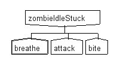

Behavior Trees
Actors in Ecstasy Motion make use of Behavior Trees |
 |
|
Behavior Trees are hierarchies of nodes, where each is either a specific isolated Action, a Sequence that runs a list of other nodes, or a Selector that picks one node from a set. With these simple building blocks it is possible to create infinitely detailed AI logic for your actors. Each node has a Condition, and a Rule which is executed if the Condition is true. Rules and Conditions are written in Torque Script. |
|
The zombie's behavior is dictated by how far away from it you are. |